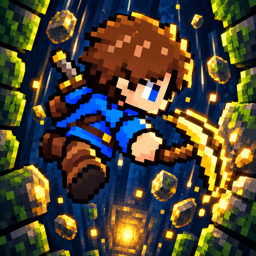

お姫様が地下にいる(らしい)
サポートページ
お問い合わせ
不具合のご報告・ご意見・ご要望はメールにてお受けしております。
不具合のご報告の際は、お使いの機種・iOSのバージョン・発生した状況(どのあたりの深さで、何をしていた時か)をお書き添えいただけると助かります。お返事までに数日かかる場合がございます。
よくある質問
Q. 記録を別の端末に引き継げますか?
A. 記録はお使いの端末の中にのみ保存しているため、引き継ぎには対応しておりません。アプリを削除すると記録も消えますのでご注意ください。
Q. 協力プレイで相手が見つかりません。
A. 2台とも同じ場所でアプリを起動し、Wi-FiとBluetoothをオンにしてください。初回に表示される「ローカルネットワーク」へのアクセスを許可していない場合は、iPhoneの「設定」→ 本アプリ →「ローカルネットワーク」をオンにしてください。
Q. 広告を見ても復活できませんでした。
A. 広告を最後まで見る前に閉じた場合や、通信状況により広告を読み込めなかった場合は復活できません。通信環境の良い場所で再度お試しください。